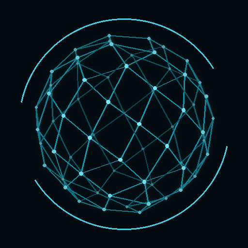

J.A.R.V.I.S.
Preparando tu asistente…
La primera vez se descargan los modelos desde sus proveedores oficiales. No necesitás instalar Python ni configurar un micrófono.
Preparando tu asistente…
La primera vez se descargan los modelos desde sus proveedores oficiales. No necesitás instalar Python ni configurar un micrófono.